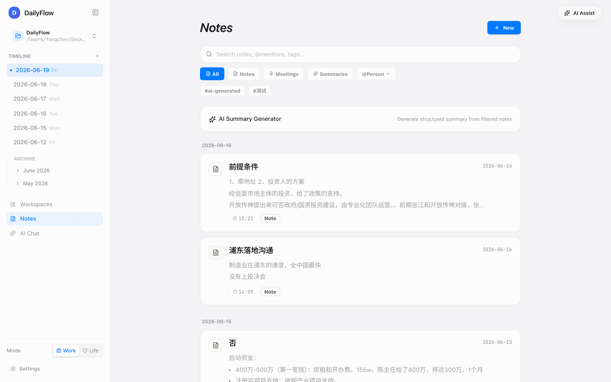
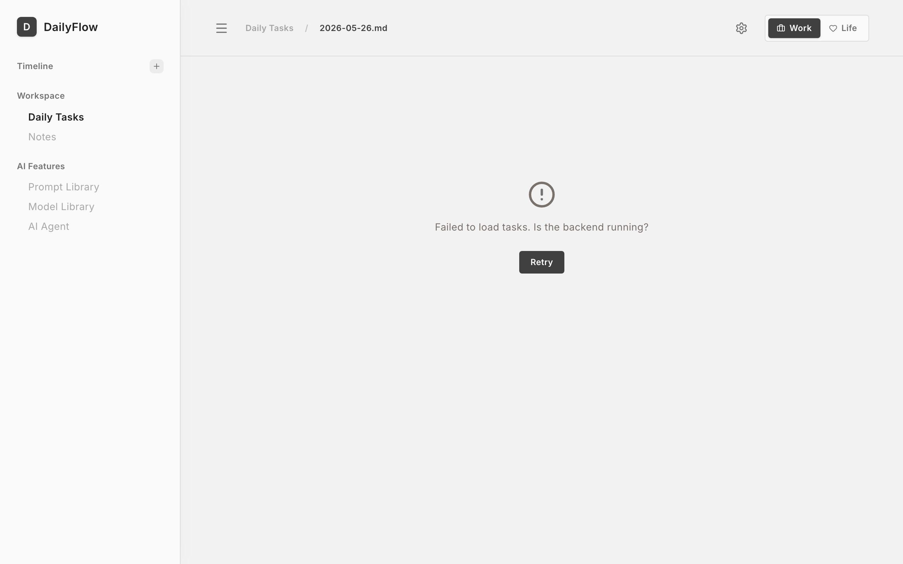

DailyFlow
我们帮你积累
不贬值的
上下文资产。
DailyFlow
we compound
your context,
an asset that appreciates.
别人卖 AI 的工时，我们帮你积累资产——
决策、承诺、会议沉淀在你的 Markdown 里，
成为只属于你的 AI 工作记忆。
Others sell AI's hours; we compound your asset — decisions,
commitments and meetings settle into your Markdown
as a private AI working memory.
AI 能力正在趋同，
上下文成为唯一不趋同的东西。
AI capability is converging —
context is the only thing that isn't.
15+ 家供应商跑在同一接口后面，随时可换。能力趋同，价格趋零。
15+ providers behind one interface, swappable at will. Capability converges; price races to zero.
每次对话从零开始——上下文是租来的，散场就没了。
Every conversation starts from zero — context is rented, and evaporates.
工具假设用户自律，而用户恰恰因为不自律才需要它。
Tools assume a disciplined user — who needs them precisely because they aren't.
生产力工具的
四个潜规则笑话。
The four open secrets
of productivity tools.
而你恰恰因为不自律才需要它。维护系统成了最重的待办。
You need it because you aren't. Maintaining the system becomes the heaviest task.
Notion 失修，Todoist 变成愧疚清单。烂尾是宿命。
Notion decays; Todoist becomes a guilt list. Abandonment is the fate.
用得越多越依赖，散场时两手空空。
The more you use it, the less you own.
幻觉和真知长得一模一样。
Hallucination and truth look identical.
我们把秩序寄托给自律，把记忆租给云端——
没有人把维护系统本身当成可以外包的工作。
We delegate order to discipline and rent memory from the cloud —
no one made maintaining the system outsourceable.
缺的不是更聪明的 AI，
是把维护系统这件事
第一次外包给 Agent。
What's missing is not smarter AI —
it is outsourcing
system maintenance itself
to an agent, for the first time.
第一款不会因为你懒而死掉的系统：你负责倾倒混乱，Agent 负责收拾。
你的决策、承诺、人脉、结果沉淀在本地 Markdown 里，越用越值钱。确认权和审计权永远在人手里——这不是 UX 细节，是立场。
The first system that won't die because you're lazy: you dump the chaos, the agent does the tidying.
Decisions, commitments, people and outcomes settle into local Markdown, compounding over time. Confirmation and audit rights stay human — not a UX detail; a position.
一个本地优先的 Agent 系统
=数据层 + Agent 层 + 确认层。
A local-first agent system
= data + agent + human confirmation.
三层都不是口号：L1 有 99 个测试文件覆盖；L2 的规则引擎写在代码里；L3 是每次 AI 写入都必须经过的确认门。
No slogans: L1 is covered by 99 test files; L2's rules engine is in the code; L3 is the gate every AI write must pass.
「提问 → 证据 → 行动」
一次走完。
Ask → evidence → act,
in one pass.
"上个月我在哪次会议里，答应过投资人什么？"
"What did I promise the investor, in which meeting, last month?"
Memory 在本地 Markdown 里检索，回答带着原文片段和出处。不允许无源断言。
Memory searches local Markdown; the answer carries the original snippet and source. Unsourced claims are not allowed.
"关联任务已逾期 5 天——要不要现在排进今天？"一键生成 Proposal，确认落盘。
"The linked task is 5 days overdue — put it into today?" One click, proposal confirmed, written.
"云端产品做不了这个演示——它们不敢承诺数据不出域。"
"Cloud products can't run this demo — they can't promise data never leaves the device."
六种能力，共享同一个上下文。
Six capabilities, one shared context.
本地 Whisper 转录，音频不出设备。
Local Whisper — audio never leaves the device.
会议与消息 → 承诺、行动项、决策。
Meetings & messages → commitments, actions, decisions.
规则先过滤，模型再排序；每天收敛 1–3 件。
Rules filter, the model ranks; 1–3 real priorities a day.
回答必带原文片段与出处。
Answers always carry snippet and source.
AI 只能提案，确认后落盘，可撤回。
AI proposes; confirmed writes only. Reversible.
日报周报自动生成，结果回写记忆。
Daily / weekly reviews, written back into memory.
不是设计稿 — 已经在跑的界面。
Not mockups — a running product.




不是 PPT 上的架构 — 是 已经在跑 的代码。
Not drawn for the slide — it's running.
// 规则引擎先过滤不可执行项 —— spec §15.3 export async function generatePlan(repo, workspaceId, input) { const constraints = PlanConstraintsSchema.parse(input); // Tier 1 · 确定性规则：Waiting / Completed 出局 const candidates = await rankCandidates(repo, workspaceId, constraints.date); // Tier 2 · 模型只做排序，且永远跑在规则之后 const ranked = flags.modelPowered ? await rankWithProvider(candidates, constraints.brief) : candidates; const items = pickTopCandidates(ranked, { maxItems: constraints.maxItems ?? 3, availableMinutes: constraints.availableMinutes, }); return validatePlan(items); // 不合法的计划不出库 }
3 分钟：从一句早安，
到"你答应过投资人什么"。
3 minutes: from one good-morning
to "what did you promise the investor".
Agent 已读完日历与逾期项，今日方案作为 Proposal 等你确认。
The agent has read the calendar and overdue items; today's plan awaits your confirmation.
本地转录 + 承诺抽取，音频没离开过这台电脑。
Local transcription + extraction; audio never left this machine.
"上个月我在哪次会议里答应过投资人什么？"
"What did I promise the investor, in which meeting, last month?"
原文片段 + 出处；"已逾期 5 天，要不要排进今天？"
Snippet + source; "5 days overdue — put it into today?"
一键确认，落盘留痕。镜头停在这一秒：AI 提案，人落笔。
One click, written, audited. The camera lingers: AI proposes, the human signs.
为什么这个位置难以复制。
Why this position is hard to copy.
上下文资产，需要一个
永不掉线的采集入口。
A context asset needs
a capture point that never goes offline.
最重要的上下文——会议、口头承诺、灵感——恰恰发生在离开键盘的时刻。
The most valuable context — meetings, spoken promises, ideas — happens away from the keyboard.
掏手机 → 解锁 → 打开 App，采集冲动已经消失。何况手机是别人的平台。
Unlock → find app → hit record: the impulse is gone. And the phone is someone else's platform.
想替代手机的全死了；单点采集设备活了。我们不替代手机，只做采集。
Phone replacements all died; single-purpose capture devices lived. We don't replace the phone — we capture.
硬件不是新产品线，
是上下文资产的感官。
Hardware isn't a new product line —
it's the sensory organ of the context asset.
闭环很清楚：硬件让采集无死角，软件让记忆变资产，Agent让资产变行动。
The loop is clean: hardware makes capture total, software turns memory into an asset, the agent turns the asset into action.
让"上下文资产"成为品类，
需要三件事。
To make "context asset" a category,
we need three things.
创始人、研究者、独立开发者。
- 开源社区 + HN + 中文技术媒体首发
- 前 1000 名 #ContextAsset 早期徽章
- Launch via open-source + HN + CN tech media
- #ContextAsset early badge for the first 1,000
硬件采集设备寻找共创伙伴。
- Skill 协议文档化，首批 10 个官方 Skill 开源
- 硬件共创：供应链 + on-device 模型厂商
- Skill protocol documented, first 10 skills open-sourced
- Hardware co-build: supply chain + on-device model vendors
绑定 DailyFlow 这个具体产品。
- 发布《个人上下文资产白皮书》
- AgenticOps 专著 × DailyFlow 互证
- Publish the "Personal Context Asset" whitepaper
- AgenticOps book × DailyFlow mutual proof
THE ASK · THREE THINGS · 90 DAYS
模型会贬值，
上下文会升值。
Models depreciate.
Context appreciates.
软件已经在跑，硬件让它长出手和耳朵。剩下的，是让每一个人都拥有带不走的 AI 记忆。
The software is running; hardware gives it hands and ears. What remains is giving everyone an AI memory that can't be taken away.